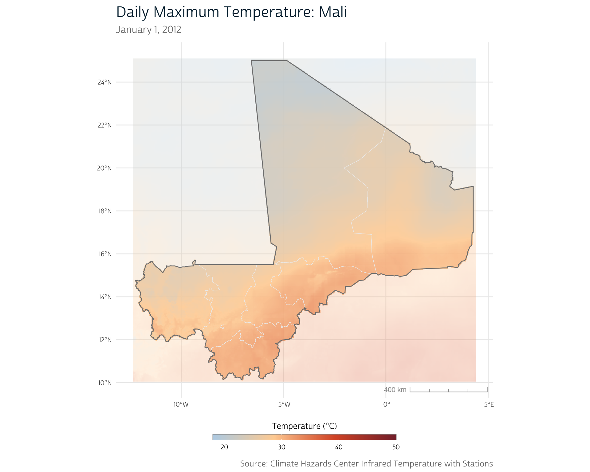
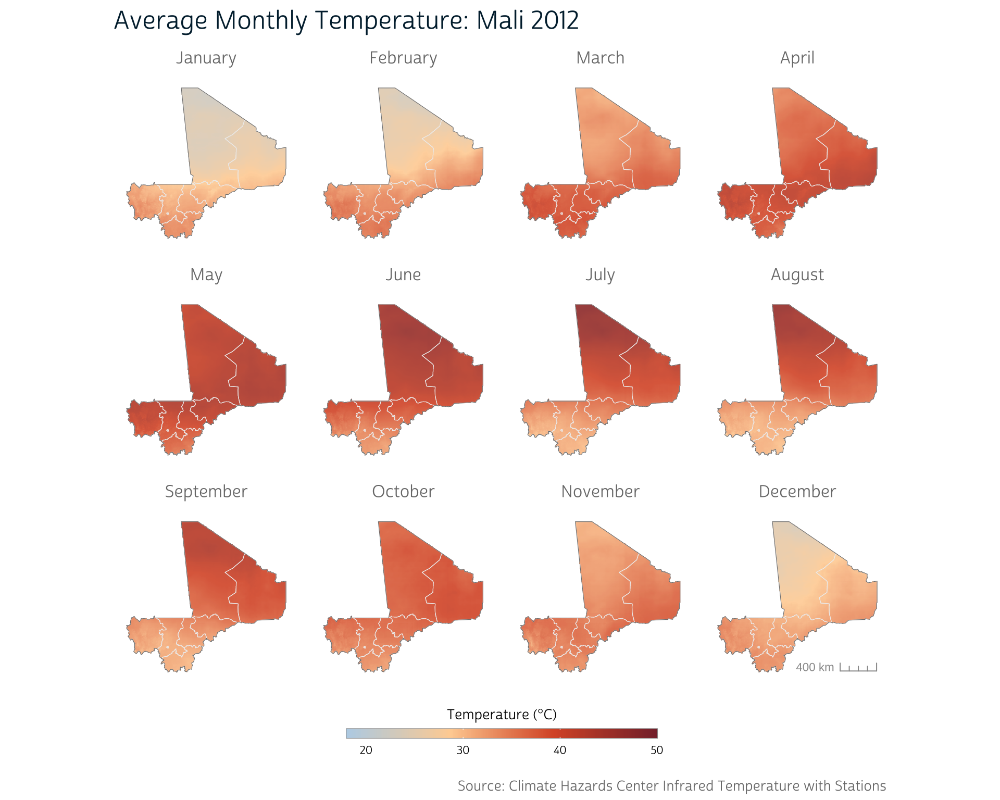
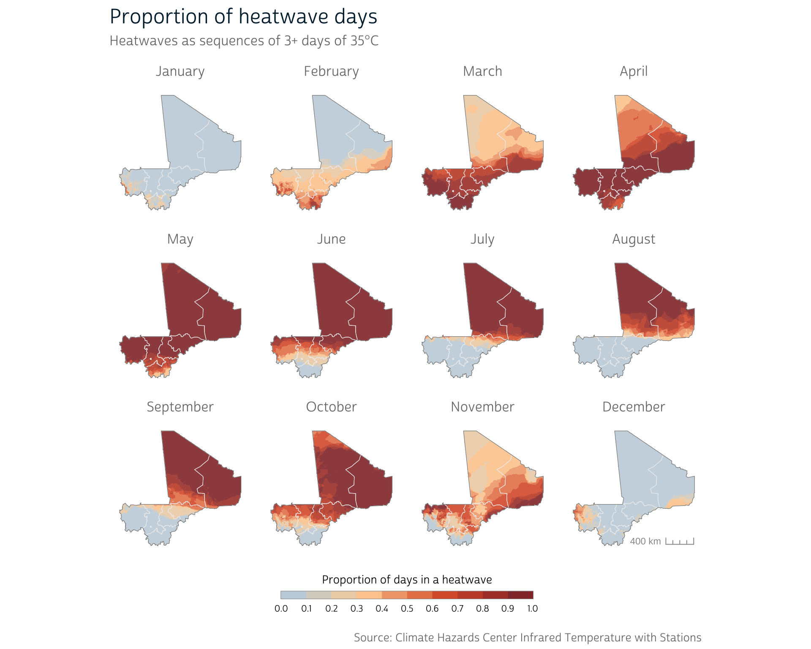
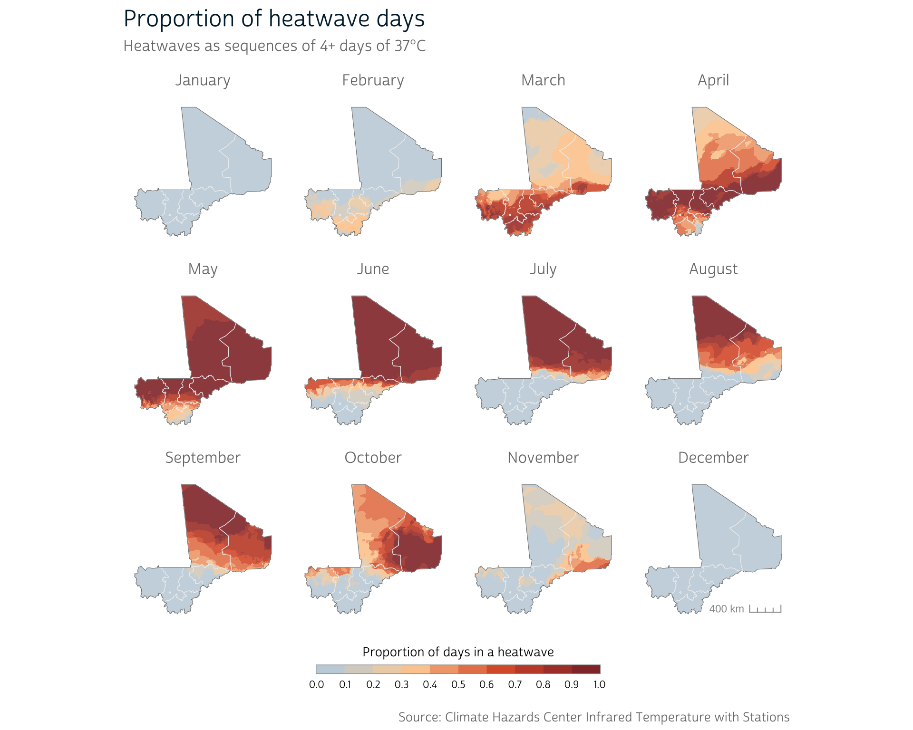
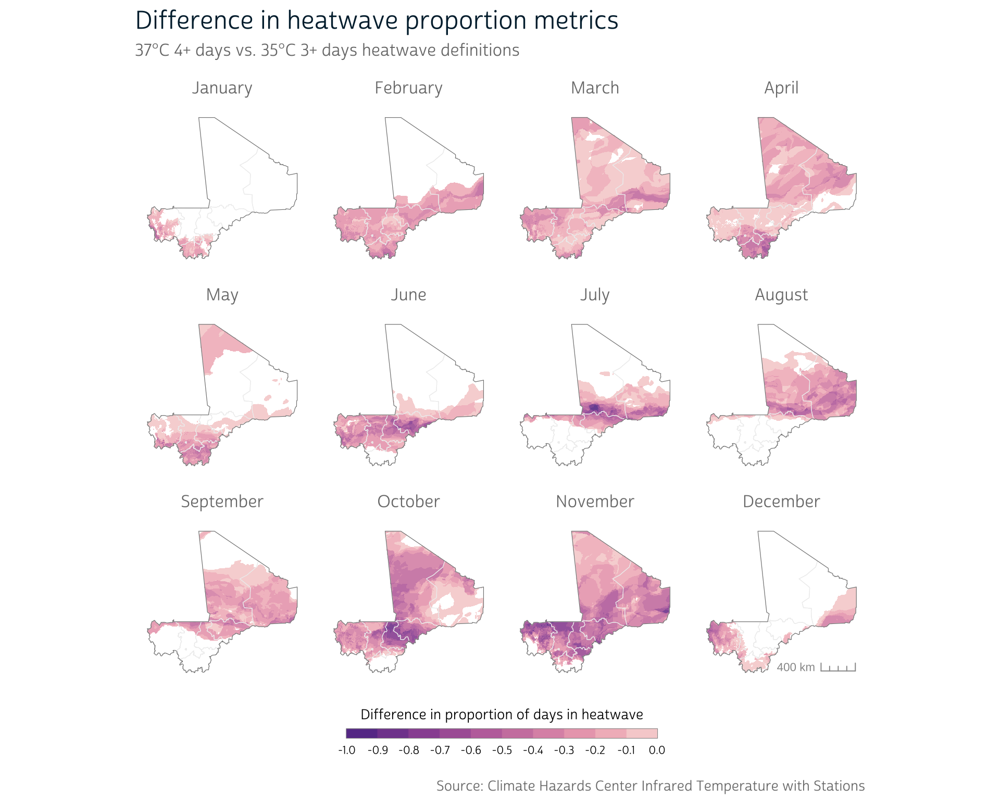

library(ipumsr)
library(terra)
library(sf)
library(ggplot2)
library(ggspatial)In our previous technical post, we showed how to reduce a daily time series of environmental data for an entire country into a single digestible metric that can be attached to DHS survey data for use in an analysis.
However, as we mentioned then, a long-run average isn’t always the most appropriate way to aggregate raster values across time. As an example, imagine we were interested in the impacts of extreme heat on child birth weight. The proximate conditions in the several months preceding each child’s birth are likely to be more consequential for that child’s health than the average conditions over many years.1
A new approach
To explore this idea, we could instead aggregate temperature data to the a more fine-grained temporal level and selectively consider the temperature in a specified time range before each child’s birth.
Fortunately, DHS surveys do record some temporal information, including the timing of the survey interview as well as birth dates for survey respondents and children. But these details are recorded at the monthly level. To account for the uncertainty in the dates reported in DHS surveys, we need to aggregate our CHIRTS data to the monthly level as well.
This approach adds three key dimensions to the techniques introduced in our precipitation post. We need to:
- calculate a temperature exposure metric at the monthly level
- identify the relevant months of temperature data for each child based on their recorded birth month
- summarize each child’s temperature exposure using their individual monthly time series of temperature data
This post focuses on the first item; our next post in this series will consider the other two. First, we’ll show how to obtain the necessary data for this demonstration, which come from IPUMS DHS and the Climate Hazards Center (CHC). Then, we’ll build on some of the tools and techniques presented in our first technical post to demonstrate several ways to operationalize and calculate temperature exposure at the monthly level.
Before we get started, we’ll load the main packages that we’ll use in this post:
Data preparation
DHS boundaries
For this series, we’ll use the 2012 DHS sample for Mali. We won’t be working with the survey data until our next post, but we will be using the integrated administrative boundary files from IPUMS in our maps.
You can download the boundary data directly from IPUMS DHS by clicking the shapefile link under the Mali section of this table. We’ve placed this shapefile in the data/gps directory within our project.
Previously, we unzipped the shapefile and loaded it with st_read() from the sf package. However, since IPUMS often distributes shapefiles in zip archives, ipumsr provides read_ipums_sf() as a way to read a shapefile directly without manually extracting the compressed files. We’ll use this convenience to load our boundary data into an sf object:
ml_borders <- read_ipums_sf("data/gps/geo_ml1995_2018.zip")
ml_borders
#> Simple feature collection with 8 features and 3 fields
#> Geometry type: POLYGON
#> Dimension: XY
#> Bounding box: xmin: -12.23888 ymin: 10.14781 xmax: 4.267383 ymax: 25.00108
#> Geodetic CRS: WGS 84
#> # A tibble: 8 × 4
#> CNTRY_NAME ADMIN_NAME DHSCODE geometry
#> <chr> <chr> <int> <POLYGON [°]>
#> 1 Mali Kayes 1 ((-9.330095 15.50158, -9.320187 15.50138, -9…
#> 2 Mali Ségou 4 ((-3.962041 13.50099, -3.963767 13.50299, -3…
#> 3 Mali Mopti 5 ((-0.7440053 15.06439, -0.9481987 14.88898, …
#> 4 Mali Tombouctou 6 ((-0.005279168 21.87488, -0.006277 21.87317,…
#> 5 Mali Bamako 9 ((-7.932848 12.68226, -7.932015 12.68209, -7…
#> 6 Mali Sikasso 3 ((-4.472905 12.71992, -4.472977 12.71908, -4…
#> 7 Mali Koulikoro 2 ((-9.076561 15.50138, -9.000042 15.50046, -8…
#> 8 Mali Gao and Kidal 7 ((-0.4509285 15.0843, -0.450753 15.0864, -0.…Our boundary file includes borders for individual administrative units within Mali. However, it’s often useful to have a single external border for spatial operations and mapping.
To combine internal borders, we can use st_union() from {sf}. However, in this case, we first need to simplify our file so that st_union() works properly.
Tip
For some spatial files, small misalignments may cause problems for certain spatial operations. Often, you’ll notice these issues in your maps if errant lines or points appear in unexpected places. You can check whether a file is topologically valid with st_is_valid().
We use st_make_valid() to correct some of these issues. Then, we can combine our internal geometries with st_union() and simplify our external border slightly.
# Validate internal borders
ml_borders_neat <- st_make_valid(ml_borders)
# Collapse internal borders to get single country border
ml_borders_out <- ml_borders_neat |>
st_union() |>
st_simplify(dTolerance = 1000) |>
st_as_sf()Now, we have both detailed internal borders as well as a single country border.
CHIRTS
For our temperature data, we’ll use the Climate Hazards Center Infrared Temperature with Stations (CHIRTS) dataset.2 CHIRTS provides daily estimates for several temperature metrics at a 0.05° (~5 kilometer) raster resolution. CHIRTS provides estimates of the following measures:
- Daily maximum air temperature (2 meters above ground)
- Daily minimum air temperature (2 meters above ground)
- Daily average relative humidity
- Daily average heat index
The most appropriate metric will depend on the nature of your research. For instance, relevant temperature metrics for studying the effects of heat on the human body are likely different from those used for studying agricultural productivity.
For health research, it’s also worth considering the specifics of the population of interest, as they may employ adaptive strategies or be at increased risk of heat exposure due to common pre-existing conditions or lifestyle features.3
Since this post focuses specifically on R techniques (and not on methodological considerations), we’ll keep it simple and use daily maximum air temperature.
There are two ways to go about obtaining the CHIRTS data: either via manual download or via the {chirps} R package.
Manual download
CHIRTS data for Africa can be downloaded directly from the Climate Hazards Center.
Data are distributed as NetCDF files, a common format for distributing scientific raster data structures. NetCDF files contain metadata about the file contents (for instance, about the temporal or spatial dimensions of the data), which will be useful later when we aggregate data to the monthly level.
You’ll notice that the files—each of which contains a full year’s worth of data for the entire continent of Africa—contain 3.3 Gigabytes of data apiece. For this demonstration, we’ll therefore only download a single year of data.
Climatological Normals
When dealing with environmental data, it’s often necessary to have a long time series of data to establish a stable climatological normal, or baseline, to which to compare current observations. 30-year normals are commonly used, but their use has recently been questioned due to the acceleration of extreme weather frequency.4
Because of the space and time required to obtain data to calculate normals at a high resolution, we won’t be creating normals from CHIRTS in this post, but you may see them in the literature.
We’re working with the 2012 Mali sample from IPUMS DHS for this example, so we’ll download the Tmax.2012.nc file from the CHC listing. We’ve placed this file in the data directory.
Fortunately, we don’t need to learn any new tools to handle this file, as support for NetCDF is already built into {terra}. We can easily load the raster with rast():
ml_chirts <- rast("data/Tmax.2012.nc")In this post we’ll be particularly interested in the temporal dimension of our raster data. Typically, a raster stack will represent time in layers, where each layer represents the recorded values at a particular point in time. terra’s SpatRaster objects have a built-in representation of time, which can be accessed with the time() function:
time(ml_chirts)
#> [1] "2012-01-01" "2012-01-02" "2012-01-03" "2012-01-04" "2012-01-05"
#> [6] "2012-01-06" "2012-01-07" "2012-01-08" "2012-01-09" "2012-01-10"
#> [11] "2012-01-11" "2012-01-12" "2012-01-13" "2012-01-14" "2012-01-15"
....We can see that the temporal information contained in the NetCDF file was automatically included when we loaded this raster into R. Each of these dates correspond to a layer in the SpatRaster. This temporal representation will become useful when we aggregate temperature to the monthly level.
Crop CHIRTS raster
Downloading data from the CHC provides a raster for the entire African continent. We can greatly speed up our future processing by cropping this raster to our area of interest using the Mali borders that we loaded above.
First, we’ll add a 10 kilometer buffer around the country border so that we retain the CHIRTS data just outside of the country as well. That way, if any DHS clusters fall in the border regions of the country, we will still be able to calculate temperature metrics in their general vicinity.
We’ve covered buffering in the past if you need to refresh your memory on this process.
# Transform to UTM 29N coordinates, buffer, and convert back to WGS84
ml_borders_buffer <- ml_borders_out |>
st_transform(crs = 32629) |>
st_buffer(dist = 10000) |>
st_transform(crs = 4326)Finally, we can crop the CHIRTS raster to our buffered border region with terra’s crop():
ml_chirts <- crop(ml_chirts, ml_borders_buffer, snap = "out")Access via the chirps package
You may recall from our previous technical post that CHC data can be obtained via the {chirps} package in R. This package provides access to CHIRTS data as well.
You can obtain CHIRTS from the chirps package by providing a spatial boundary representing the area of interest for which the CHIRTS raster data should be obtained. You’ll also need to specify a temporal range and temperature variable.
In this case, we’ll use the buffered administrative borders for Mali that we downloaded earlier, specify the 2012 time range, and select the "Tmax" variable:
ml_chirts2 <- chirps::get_chirts(
vect(ml_borders_buffer),
dates = c("2012-01-01", "2012-12-31"),
var = "Tmax"
)We convert our administrative borders to a terra SpatVector object with vect() because this is the spatial structure expected by get_chirts().
In contrast to the NetCDF files provided when downloading CHIRTS data directly, obtaining data via the chirps package does not provide any temporal metadata:
time(ml_chirts2)
#> [1] NA NA NA NA NA NA NA NA NA NA NA NA NA NA NA NA NA NA NA NA NA NA NA NA NA
#> [26] NA NA NA NA NA NA NA NA NA NA NA NA NA NA NA NA NA NA NA NA NA NA NA NA NA
#> [51] NA NA NA NA NA NA NA NA NA NA NA NA NA NA NA NA NA NA NA NA NA NA NA NA NA
....Since we know that we have a full year of data, we can construct the temporal metadata manually. We’ll use the {lubridate} package to make this a little easier:
# Convert strings to Date objects specifying year-month-day (ymd) format:
start <- lubridate::ymd("2012-01-01")
end <- lubridate::ymd("2012-12-31")
# Set time as a daily sequence of dates for all of 2012
time(ml_chirts2) <- seq(start, end, by = "days")
time(ml_chirts2)
#> [1] "2012-01-01" "2012-01-02" "2012-01-03" "2012-01-04" "2012-01-05"
#> [6] "2012-01-06" "2012-01-07" "2012-01-08" "2012-01-09" "2012-01-10"
#> [11] "2012-01-11" "2012-01-12" "2012-01-13" "2012-01-14" "2012-01-15"
....
Caution
Manually attaching time units works in this case because we know the CHIRTS data have no gaps. However, there’s no built-in check to ensure that you’re attaching the correct date to each layer of the raster stack, so you’ll want to be sure you know what time units are truly represented by each layer before assigning them manually.
At this point, we should have a daily raster for the region around Mali. We can take a peek by mapping the temperature distribution on a single day of our CHIRTS time series:
We’re not going to explicitly demonstrate how we produce our maps in this post since some are fairly complicated to set up. If you’re curious, you can peek at the collapsed code blocks to see how each of our maps are produced.
Show plot functions
# Add map scale bar and update guides
theme_dhs_map <- function(show_scale = TRUE, continuous = TRUE) {
if (show_scale) {
scale <- annotation_scale(
aes(style = "ticks", location = "br"),
text_col = "#999999",
line_col = "#999999",
height = unit(0.2, "cm")
)
} else {
scale <- NULL
}
if (continuous) {
guide <- guides(
fill = guide_colorbar(draw.llim = FALSE, draw.ulim = FALSE)
)
} else {
guide <- guides(
fill = guide_colorsteps(draw.llim = FALSE, draw.ulim = FALSE)
)
}
list(scale, guide)
}
# Define custom palette functions so we can easily reproduce
# color schemes across our maps in this post
chirts_palettes <- function() {
list(
main = c("#bad3e8", "#ffd3a3", "#da5831", "#872e38"),
diff = c("#5B3794", "#8F4D9F", "#B76AA8", "#D78CB1", "#F1B1BE", "#F8DCD9")
)
}
# Continuous fill scale for a selected palette
scale_chirts_c <- function(pal = "main", ...) {
pal <- chirts_palettes()[[pal]]
colorRampPalette(pal, ...)
}
# ggplot2 layer for continuous scale for selected palette
scale_fill_chirts_c <- function(pal = "main", na.value = NA, ...) {
pal <- scale_chirts_c(pal)
ggplot2::scale_fill_gradientn(colors = pal(256), na.value = na.value, ...)
}
# ggplot2 layer for binned scale for selected palette
scale_fill_chirts_b <- function(pal = "main", na.value = NA, ...) {
pal <- scale_chirts_c(pal)
ggplot2::scale_fill_stepsn(colors = pal(256), na.value = na.value, ...)
}Show plot code
# Split raster into two at the country border to allow for differential
# highlighting
r_in <- mask(ml_chirts[[1]], ml_borders_out, inverse = FALSE)
r_out <- mask(ml_chirts[[1]], ml_borders_out, inverse = TRUE)
# Plot
ggplot() +
layer_spatial(r_in, alpha = 0.9, na.rm = TRUE) +
layer_spatial(r_out, alpha = 0.3, na.rm = TRUE) +
layer_spatial(ml_borders_neat, fill = NA, color = "#eeeeee") +
layer_spatial(ml_borders_out, fill = NA, color = "#7f7f7f", linewidth = 0.5) +
labs(
title = "Daily Maximum Temperature: Mali",
subtitle = "January 1, 2012",
fill = "Temperature (°C)",
caption = "Source: Climate Hazards Center Infrared Temperature with Stations"
) +
scale_fill_chirts_c(limits = c(18, 50)) +
theme_dhs_map()
Calculating monthly temperature metrics
As we mentioned in the introduction, our ultimate goal is to identify the temperature trends prior to each birth in our DHS sample. However, DHS survey data record temporal information about interviews and births at the monthly level. Thus, the most accurate we can be is to identify temperature running up to the month immediately prior to a child’s birth.
We therefore need to aggregate our daily CHIRTS data to the monthly level. In the rest of the post, we’ll demonstrate how to calculate several possible monthly metrics in R. Then, in a future post, we’ll demonstrate how to attach the monthly CHIRTS data to each record in our DHS sample.
Defining Heat Exposure
A vast array of methods to identify extreme temperature and heatwave exposure exist in the literature, and we can’t demonstrate the processing required for each and every one. However, the approaches we demonstrate should give you a sense of the tools and techniques available for you when working with temperature data in your own research.
1. Average monthly temperature
For our first metric, we’ll take a simple approach and calculate an average monthly temperature.
Previously, we introduced terra’s mean() method, which allows you to calculate a single mean across all layers of a SpatRaster object. In this case, we also want to calculate a mean, but we need to adapt our approach so we can do so for each month independently.
Enter terra’s tapp() function. tapp() allows you to apply a function to groups of raster layers. You can indicate which layers should be grouped together with the index argument. For instance, to independently calculate the mean of the first three layers and the second three layers, we could use the following index:
tapp(
ml_chirts[[1:6]], # Select the first 6 layers to demo
fun = mean,
index = c(1, 1, 1, 2, 2, 2)
)
#> class : SpatRaster
#> dimensions : 301, 335, 2 (nrow, ncol, nlyr)
#> resolution : 0.05, 0.05 (x, y)
#> extent : -12.35, 4.399999, 10.05, 25.1 (xmin, xmax, ymin, ymax)
#> coord. ref. : lon/lat WGS 84
#> source(s) : memory
#> names : X1, X2
#> min values : 20.32146, 21.20080
#> max values : 35.77333, 35.86034Notice that this produces an output SpatRaster with 2 layers: the first represents the mean of the first 3 layers in the input, and the second represents the mean of the next 3 layers.
However, manually identifying the index layers for each month of the year would be tedious and error-prone. Not only would we have to type out code to handle 366 days of data, but we would also have to contend with the fact that months vary in length. And depending on your time frame and region of interest, you may also need to account for leap years or entirely different calendars!
Fortunately, terra provides us with an easier way. Because we have a time component to our data, we can use the temporal metadata already attached to our raster as the index. For instance, to aggregate by month, simply use index = "months":
ml_chirts_mean <- tapp(ml_chirts, fun = mean, index = "months")
ml_chirts_mean
#> class : SpatRaster
#> dimensions : 301, 335, 12 (nrow, ncol, nlyr)
#> resolution : 0.05, 0.05 (x, y)
#> extent : -12.35, 4.399999, 10.05, 25.1 (xmin, xmax, ymin, ymax)
#> coord. ref. : lon/lat WGS 84 (CRS84) (OGC:CRS84)
#> source(s) : memory
#> names : m_1, m_2, m_3, m_4, m_5, m_6, ...
#> min values : 20.13009, 21.27224, 27.66812, 29.93578, 29.76501, 26.91157, ...
#> max values : 35.44701, 38.60472, 40.72202, 42.85499, 44.10707, 47.46994, ...
#> time (mnts) : Jan to DecAs expected, we now have 12 layers in our output SpatRaster (see the dimensions component of the output above). Each layer contains the average daily maximum temperature (in degrees Celsius) for the given month, as shown below.
Show plot code
library(patchwork)
# Helper to split raster layers into a list for small-multiple panel mapping
split_raster <- function(r) {
purrr::map(seq_len(nlyr(r)), function(i) r[[i]])
}
# Function to build individual panels for a small-multiple map using
# continuous color scheme
chirts_panel_continuous <- function(x,
panel_title = "",
show_scale = TRUE,
...) {
r_in <- mask(x, ml_borders_out, inverse = FALSE)
ggplot() +
layer_spatial(r_in, alpha = 0.9, na.rm = TRUE) +
layer_spatial(ml_borders_neat, fill = NA, color = "#eeeeee") +
layer_spatial(ml_borders_out, fill = NA, color = "#7f7f7f") +
labs(subtitle = panel_title, fill = "Temperature (°C)") +
scale_fill_chirts_c(...) +
theme_dhs_map(show_scale = show_scale) +
theme(
axis.text.x = element_blank(),
axis.text.y = element_blank(),
plot.subtitle = element_text(hjust = 0.5, size = 12),
panel.grid = element_blank()
)
}
# Split raster by layer
r <- split_raster(ml_chirts_mean)
# Show scale only on final panel
show_scale <- c(rep(FALSE, length(r) - 1), TRUE)
# Panel labels
months <- c("January", "February", "March", "April",
"May", "June", "July", "August",
"September", "October", "November", "December")
# Create map panels
panels <- purrr::pmap(
list(r, months, show_scale),
function(x, y, z) chirts_panel_continuous(x, y, z, limits = c(18, 50))
)
# Plot
wrap_plots(panels) +
plot_layout(guides = "collect", ncol = 4) +
plot_annotation(
title = "Average Monthly Temperature: Mali 2012",
caption = "Source: Climate Hazards Center Infrared Temperature with Stations"
)
Note that the CHC does provide a CHIRTS product that has been pre-aggregated to the monthly level. For projects relying on average monthly temperature, this is likely a better option than manually aggregating more fine-grained CHIRTS data.
However, the advantage to working with daily CHIRTS data is that we have the flexibility to calculate our own custom monthly temperature metrics that aren’t necessarily provided out-of-the-box. We’ll demonstrate one in the next section.
2. Days above a temperature threshold
Average temperature may be a straightforward monthly temperature metric, but it doesn’t do a very good job of capturing acute temperature anomalies. When it comes to human health, evidence suggests that temperatures above certain thresholds are associated with physiological impairments, though the precise threshold depends on several factors.3 Regardless, these extreme events may be masked when we average across an entire month.
To explore this possibility, we’ll calculate the proportion of days in each month that exceed a certain raw temperature threshold. We’ll use 35°C as our threshold, which represents a value near the upper end of Mali’s temperature distribution1 and is similar to other commonly used (though occasionally questionable) thresholds.3
Typically, you would want a more thorough justification of your threshold temperature. This post is not intended to represent a real analysis, so we select 35°C for the purposes of demonstration.
Logical raster operations
We can exploit the fact that terra supports logical operations on SpatRaster objects to help us calculate this metric. For instance, we can compare the entire raster to a set value with the familiar > operator:
ml_bin <- ml_chirts > 35This produces a binary raster, where each pixel in each layer receives a logical value based on whether it is above or below 35 degrees Celsius (note that the min values and max values for each layer are now TRUE or FALSE):
ml_bin
#> class : SpatRaster
#> dimensions : 301, 335, 366 (nrow, ncol, nlyr)
#> resolution : 0.05, 0.05 (x, y)
#> extent : -12.35, 4.399999, 10.05, 25.1 (xmin, xmax, ymin, ymax)
#> coord. ref. : lon/lat WGS 84 (CRS84) (OGC:CRS84)
#> source : spat_d3403e6edae9_54080_GdaPwXHptgIOPSx.tif
#> varname : Tmax (Climate Hazards Center Tmax)
#> names : Tmax_1, Tmax_2, Tmax_3, Tmax_4, Tmax_5, Tmax_6, ...
#> min values : FALSE, FALSE, FALSE, FALSE, FALSE, FALSE, ...
#> max values : TRUE, TRUE, TRUE, TRUE, TRUE, TRUE, ...
#> time (days) : 2012-01-01 to 2012-12-31We can use this to count the number of days above the 35°C threshold for each pixel in our raster. We simply need to sum the binary raster layers within each month to count the number of days that exceed the threshold at each pixel location.
When treating logical values as numeric, TRUE is treated as a 1 and FALSE is treated as a 0.
However, we also need to account for the fact that not all months contain the same number of days. We therefore produce a proportion of each month’s days that meet our temperature threshold by dividing by the number of days in each month.
For binary data, this turns out to be the same as calculating a mean, so we can use a similar approach as we did when calculating average monthly temperature. The difference is that we now provide our binary raster (ml_bin) to the tapp() function:
ml_prop <- tapp(ml_bin, fun = mean, index = "months")Once again, we end up with a SpatRaster with 12 layers. However, in this case, each raster pixel reflects the proportion of days above 35° in that month.
Show plot code
# Function to build individual panels for a small-multiple map using
# binned color scheme
chirts_panel_binned <- function(x,
panel_title = "",
fill_label = "",
show_scale = TRUE,
...) {
r_in <- mask(x, ml_borders_out, inverse = FALSE)
ggplot() +
layer_spatial(r_in, alpha = 0.9, na.rm = TRUE) +
layer_spatial(ml_borders_neat, fill = NA, color = "#eeeeee") +
layer_spatial(ml_borders_out, fill = NA, color = "#7f7f7f") +
labs(subtitle = panel_title, fill = fill_label) +
scale_fill_chirts_b(...) +
theme_dhs_map(show_scale = show_scale) +
theme(
axis.text.x = element_blank(),
axis.text.y = element_blank(),
plot.subtitle = element_text(hjust = 0.5, size = 12),
panel.grid = element_blank(),
legend.ticks = element_blank()
)
}
# Split raster by layer
r <- split_raster(ml_prop)
# Create map panels
panels <- purrr::pmap(
list(r, months, show_scale),
function(x, y, z) chirts_panel_binned(
x,
y,
z,
n.breaks = 8,
limits = c(0, 1),
fill_label = "Proportion of Days Above 35°C"
)
)
# Plot
wrap_plots(panels) +
plot_layout(guides = "collect", ncol = 4) +
plot_annotation(
title = "Proportion of Days Above Threshold",
caption = "Source: Climate Hazards Center Infrared Temperature with Stations"
)
This approach reveals a bit more detail about the consistency of the temperature exposure during certain months. As we can see, some months are spent almost entirely above 35°C across the country. This continual exposure may be more strongly related to health than the averages we calculated in the section above.
3. Heatwaves: Consecutive days above a temperature threshold
Continual exposure to high temperatures likely has a more pronounced health impact than isolated hot days. Accordingly, most heatwave definitions attempt to identify sequences of days that meet certain temperature criteria.
We can build upon our previous temperature metric to produce a simple heatwave definition that identifies all days that belong to a sequence of 3+ days in a row that all meet the 35°C threshold used earlier.
How should we go about identifying sequences of days? To simplify things, let’s pull out the daily CHIRTS values for a single pixel in our raster to use as an example:
# Extract values from a single pixel of CHIRTS data
px1 <- as.numeric(ml_chirts[1, 1])
px1
#> [1] 22.08196 22.25259 24.63318 25.46410 25.11430 24.69748 25.71723 27.64781
#> [9] 25.00261 22.27929 24.83206 22.42412 24.87811 28.53550 27.20606 26.75240
#> [17] 22.12105 22.98229 20.55801 19.10251 20.74286 22.91010 22.37615 22.23903
....As we demonstrated above, it’s easy to identify the layers that are above a given threshold:
px1_bin <- px1 > 35
px1_bin
#> [1] FALSE FALSE FALSE FALSE FALSE FALSE FALSE FALSE FALSE FALSE FALSE FALSE
#> [13] FALSE FALSE FALSE FALSE FALSE FALSE FALSE FALSE FALSE FALSE FALSE FALSE
#> [25] FALSE FALSE FALSE FALSE FALSE FALSE FALSE FALSE FALSE FALSE FALSE FALSE
....But how do we extract sequences from this vector? One option is to exploit the features of run-length encoding. Run-length encoding represents a vector of values as a sequence of runs of a single value and the length of that run.
We can use the rle() function from base R to convert to run-length encoding:
px1_rle <- rle(px1_bin)
px1_rle
#> Run Length Encoding
#> lengths: int [1:23] 81 1 16 1 30 11 3 3 7 1 ...
#> values : logi [1:23] FALSE TRUE FALSE TRUE FALSE TRUE ...The output shows us that the px1_bin vector starts with a run of 81 FALSE values, then has a run of 1 TRUE value, then 16 FALSE values, and so on. As you can see, run-length encoding provides us both with information about the values and the sequencing of our input vector.
If we define a heatwave as any sequence of 3+ days above the temperature threshold, each heatwave will be represented by entries with a value of TRUE (days that exceeded the threshold) and a length (number of days in a row) of 3 or more. We can use logical operations to identify whether each run is a heatwave or not:
# Identify days that were above threshold and belonged to a 3+ day sequence
is_heatwave <- px1_rle$values & (px1_rle$lengths >= 3)
is_heatwave
#> [1] FALSE FALSE FALSE FALSE FALSE TRUE FALSE TRUE FALSE FALSE FALSE TRUE
#> [13] FALSE TRUE FALSE TRUE FALSE TRUE FALSE TRUE FALSE TRUE FALSESumming this vector will give us the number of unique heatwave events during the year for this sample pixel:
sum(is_heatwave)
#> [1] 8We could also get the proportion of days that are within those heatwaves by summing the lengths of all the heatwave events and dividing by the number of total days:
# Extract lengths for each heatwave event
heatwave_lengths <- px1_rle$lengths[is_heatwave]
heatwave_lengths
#> [1] 11 3 4 101 4 8 3 7
# Proportion of days belonging to a heatwave
sum(heatwave_lengths) / length(px1)
#> [1] 0.3852459Custom functions
If we want to calculate the proportion of heatwave days across our entire raster, we can again return to tapp(). However, there’s no built-in function (like mean) that we can use to do the processing we walked through above.
Instead, we must provide our own custom function to indicate the processing that tapp() should perform on each set of layers. To define a function, we use the function() keyword along with several arguments.
Note
A function’s arguments are the input parameters that the user can set when calling the function.
At its simplest, all this requires is copying the code we’ve already written above (we’ve consolidated the code into single lines in some cases):
prop_heatwave <- function(temps) {
# Convert to RLE of days above threshold
bin_rle <- rle(temps >= 35)
# Identify heatwave events based on sequence length
is_heatwave <- bin_rle$values & (bin_rle$lengths >= 3)
# Count heatwave days and divide by total number of days
sum(bin_rle$lengths[is_heatwave]) / length(temps)
}Note that we do the exact same processing as we did in our step-by-step walkthrough. The only difference is that instead of using the px1 variable (which contains the values for a single pixel), we instead use a more general argument, which we call temps. temps stands in for any arbitrary input vector that the function user can provide (we’ve named it temps to help make it clear that this should be a vector of temperature values). This means that we can easily run the same calculation on different vectors:
# Extract 2 pixels for demonstration
px1 <- as.numeric(ml_chirts[1, 1])
px2 <- as.numeric(ml_chirts[1, 2])
# Calculate heatwave proportions for each pixel
prop_heatwave(px1)
#> [1] 0.3852459
prop_heatwave(px2)
#> [1] 0.3852459Writing a more flexible function
Right now, the user of the function has no way to modify the temperature threshold or sequence length used in the heatwave definition, because those values (35 and 3) are hard-coded into our function.
If we move these values to the function arguments, we allow the user to decide what values these parameters should take. Here is a modified version of prop_heatwave() that does this:
prop_heatwave <- function(temps, thresh, n_seq) {
# Convert to RLE of days above threshold
bin_rle <- rle(temps >= thresh)
# Identify heatwave events based on sequence length
is_heatwave <- bin_rle$values & (bin_rle$lengths >= n_seq)
# Count heatwave days and divide by total number of days
sum(bin_rle$lengths[is_heatwave]) / length(temps)
}Our function now has a thresh argument and an n_seq argument. Where we previously would have compared our input temps vector to the threshold of 35, we now compare it to the value the user provides to thresh. Similarly, where we previously would have used sequences of length 3 or more, we now use the sequence length the user provides to n_seq.
Using the values of 35 and 3 produces the same heatwave proportion as above:
prop_heatwave(px1, thresh = 35, n_seq = 3)
#> [1] 0.3852459But now we can easily change our inputs to calculate modified heatwave definitions. For instance, to find the proportion of days in 4+ day heatwaves of at least 37°C:
prop_heatwave(px1, thresh = 37, n_seq = 4)
#> [1] 0.3114754This example demonstrates how function arguments can be used to produce a more flexible function that can be easily applied across a range of input parameters. Building functions in this way has a bit of an up-front cost, but it often pays for itself by making your future analysis much more robust and scalable.
Scaling up
Now that we have a function to calculate our heatwave definition, we can provide it to tapp() with our desired temperature threshold and sequence parameters.
# Apply our custom heatwave counter to each month
ml_heatwave_prop <- tapp(
ml_chirts,
fun = function(x) prop_heatwave(x, thresh = 35, n_seq = 3),
index = "months"
)
Anonymous Function Syntax
Our fun argument above is written in anonymous function syntax. It may look a little complex, but remember that tapp() expects you to provide a function to its fun argument. Whichever function you provide should be a function of the vector of values for each pixel in the input raster.
function(x) prop_heatwave(x, ...) indicates that we want to provide each of these vectors x to our prop_heatwave() function (as the temps argument). The thresh and n_seq arguments are fixed across all pixels. (In this case, x is just a placeholder to reference the vector inputs to our function. We could just as easily use another name, but x is traditional and concise.)
Why didn’t we use this syntax in previous sections? Well, it turns out that fun = mean was simply a shorthand. Writing fun = function(x) mean(x) would have also worked!
Let’s see what the distribution of heatwave days looks like under our latest definition:
Show plot code
# Split raster by layer
r <- split_raster(ml_heatwave_prop)
# Create map panels
panels <- purrr::pmap(
list(r, months, show_scale),
function(x, y, z) chirts_panel_binned(
x,
y,
z,
n.breaks = 8,
limits = c(0, 1),
fill_label = "Proportion of days in a heatwave"
)
)
# Plot
wrap_plots(panels) +
plot_layout(guides = "collect", ncol = 4) +
plot_annotation(
title = "Proportion of heatwave days",
subtitle = "Heatwaves as sequences of 3+ days of 35°C",
caption = "Source: Climate Hazards Center Infrared Temperature with Stations"
)
Because we’ve built a flexible prop_heatwave() function, we can easily calculate a different heatwave definition. For heatwaves of 4+ days of 37°C+, for instance:
ml_heatwave_prop2 <- tapp(
ml_chirts,
fun = function(x) prop_heatwave(x, thresh = 37, n_seq = 4),
index = "months"
)Show plot code
# Split raster by layer
r <- split_raster(ml_heatwave_prop2)
# Create map panels
panels <- purrr::pmap(
list(r, months, show_scale),
function(x, y, z) chirts_panel_binned(
x,
y,
z,
n.breaks = 8,
limits = c(0, 1),
fill_label = "Proportion of days in a heatwave"
)
)
# Plot
wrap_plots(panels) +
plot_layout(guides = "collect", ncol = 4) +
plot_annotation(
title = "Proportion of heatwave days",
subtitle = "Heatwaves as sequences of 4+ days of 37°C",
caption = "Source: Climate Hazards Center Infrared Temperature with Stations"
)
It can be difficult to see the differences side-by-side, but we can subtract the output rasters to easily examine the differences between the two definitions:
ml_heatwave_diff <- ml_heatwave_prop2 - ml_heatwave_propShow plot code
# Convert 0 values to NA for transparency
NAflag(ml_heatwave_diff) <- 0
# Split raster into layers
r <- split_raster(ml_heatwave_diff)
# Create map panels
panels <- purrr::pmap(
list(r, months, show_scale),
function(x, y, z) chirts_panel_binned(
x,
y,
z,
pal = "diff",
n.breaks = 8,
limits = c(-1, 0),
fill_label = "Difference in proportion of days in heatwave"
)
)
# Plot
wrap_plots(panels) +
plot_layout(guides = "collect", ncol = 4) +
plot_annotation(
title = "Difference in heatwave proportion metrics",
subtitle = "37°C 4+ days vs. 35°C 3+ days heatwave definitions",
caption = "Source: Climate Hazards Center Infrared Temperature with Stations"
)
As we can see, modifying our definition does indeed produce meaningful differences in the prevalence of heatwave days in various parts of the country. Which definition is appropriate will depend on your particular research questions and aims. However, building custom functions into your workflow will make it much easier to quickly compare different definitions, facilitating sensitivity analyses and robustness checks.
Up next
There are many temperature exposure concepts that we didn’t address in this post, like climatological normals, seasonality, humidity, and more. However, the techniques we introduced should give you a solid foundation for building flexible workflows to compute environmental metrics that you use commonly in your research.
This post is the first in a short series. In our next technical post, we’ll build on the metrics we produced here to demonstrate how we can use the monthly environmental data in conjunction with the dates recorded in DHS surveys.
We’ll extract values for our temperature metrics at the locations of the survey responses and attach these values to our DHS records on a month-by-month basis. This will allow us to finally link time-specific temperature values to individual births in the DHS!
Getting Help
Questions or comments? Check out the IPUMS User Forum or reach out to IPUMS User Support at ipums@umn.edu.
References
1. Grace, K., Verdin, A., Dorélien, A., Davenport, F., Funk, C., & Husak, G. (2021). Exploring strategies for investigating the mechanisms linking climate and individual-level child health outcomes: An analysis of birth weight in Mali. Demography, 58, 499–526. https://doi.org/10.1215/00703370-8977484
2. Funk, C., Peterson, P., Peterson, S., Shukla, S., Davenport, F., Michaelsen, J., Knapp, K. R., Landsfeld, M., Husak, G., Harrison, L., Rowland, J., Budde, M., Meiburg, A., Dinku, T., Pedreros, D., & Mata, N. (2019). A high-resolution 1983–2016 Tmax climate data record based on infrared temperatures and stations by the Climate Hazard Center. Journal of Climate, 32, 5639–5658. https://doi.org/10.1175/JCLI-D-18-0698.1
3. Vanos, J. K., Baldwin, J. W., Jay, O., & Ebi, K. L. (2020). Simplicity lacks robustness when projecting heat-health outcomes in a changing climate. Nature Communications, 11, 1–5. https://doi.org/10.1038/s41467-020-19994-1
4. Livezey, R. E., Vinnikov, K. Y., Timofeyeva, M. M., Tinker, R., & van den Dool, H. M. (2007). Estimation and extrapolation of climate normals and climatic trends. Journal of Applied Meteorology and Climatology, 46, 1759–1776. https://doi.org/10.1175/2007JAMC1666.1